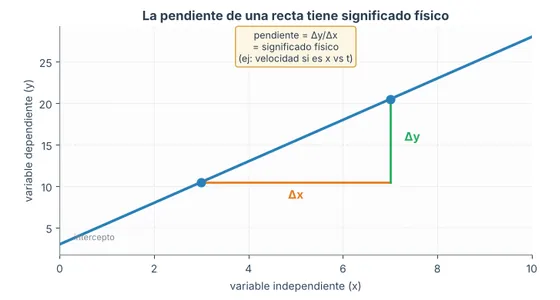
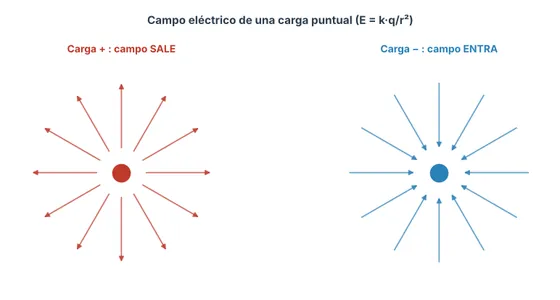

Nota para estudiantes: la primera vez que abras un taller puede tardar 1–2 minutos en cargar mientras se prepara el entorno ejecutable. Después funciona de forma fluida. Acceso libre sin necesidad de crear cuenta ni instalar software.
26 talleres interactivos2 cursos integradosEjecución en la nube · Sin cuenta
No se encontraron talleres con ese término.
Cómo usar los talleres
toca para ver
⏳
La primera vez que abres un taller, tarda 1–2 minutos en preparar el entorno. Después es rápido.
🎚️
Mueve los deslizadores (sliders) para cambiar los parámetros y ver la física en tiempo real.
📐
Cada punto tiene un esquema conceptual que explica el "porqué" físico, no solo el resultado.
✅
Los cuestionarios dan una nota formativa de 0,0 a 5,0. Cada pregunta tiene 3 intentos: 100 % del crédito al primero, 50 % al segundo y 25 % al tercero. Razona antes de verificar.
🔧
Cada punto incluye una aplicación en ingeniería con contexto colombiano real.
🧠
Las preguntas de "defiende tu conclusión" evalúan tu razonamiento: no basta el número, hay que justificar el porqué físico y distinguir una respuesta correcta de una que solo suena convincente.
🤖
El recuadro TIP-IA te invita a usar un asistente como tutor socrático: verifica tu razonamiento sin pedir la solución. La regla de oro: primero resuelves tú, después consultas.
🛟
Si un taller no carga, usa el enlace "o en Colab" de su tarjeta (requiere cuenta de Google) y ejecuta Entorno de ejecución → Ejecutar todo.
🖱️
Pulsa "Mostrar solución" para ver el desarrollo paso a paso cuando lo necesites.
Etiquetas: ★ básico ★★ intermedio ★★★ avanzado Aplicación taller de caso real con contexto de ingeniería
Competencias que desarrollan los talleres:
CL · Comprensión de Leyes: explicar las leyes fundamentales de la física y la química que gobiernan la naturaleza.
UFT · Usos y Fundamentos de Tecnología: usar software e instrumentos de medición y explicar cómo operan algunos dispositivos.
UCM · Utilizar Conceptos y Modelos: usar conceptos y modelos científicos para analizar problemas académicos y cotidianos.
PRC · Pensamiento y Razonamiento Científico: aplicar procedimientos, métodos y herramientas científicas para resolver problemas.
ULC · Uso de Lenguaje Científico: expresar y comunicar ideas usando la notación, los símbolos y el vocabulario propios de la ciencia.
Empieza aquí
¿Por dónde comienzo?
mostrar / ocultar
Si es tu primera vez, esta es una ruta sugerida: primero las bases de cada curso, luego un taller de aplicación real para ver la física en contexto de ingeniería.
Cinemática y dinámica con contextos de ingeniería colombiana. g = 9,81 m/s².
Mapa de ruta · cada flecha lleva al taller que conviene hacer después; toca uno para ir a su tarjeta · borde punteado: aplicación (ámbar) o repaso (azul)

Cap. 2 — Unidades y medidas
Unidades, Medidas y Reporte
Conversión de unidades, cifras significativas e interpretación de gráficas, más la importancia en ingeniería de convertir bien (casos reales) y reportar resultados con rigor en informes. Base de todo el curso.
Exactitud vs. precisión, tipos de error y métricas, estadística de mediciones (promedio, desviación, error de la media) y propagación de errores. Con práctica de laboratorio en casa usando instrumentos cotidianos.
Alerta sísmica temprana, onda P vs onda S, localización del epicentro, ventana de aviso y velocidad promedio por capas. Aplicación con contexto colombiano (redes del SGC).
6 puntos · ≈ 60 min · antes: Movimiento Rectilíneo
Descomposición, suma de velocidades y sistemas de fuerzas concurrentes. Puente entre cinemática 2D y las Leyes de Newton. Lancha en río, cerchas, anclajes, remolque marítimo.
Cinemática angular, relación v=ωr, momento de inercia y torque, energía rotacional y conservación del momento angular. Ejes, volantes, turbinas, giroscopios.
Masa-resorte, periodo y frecuencia, velocidad y aceleración máximas, energía del oscilador, péndulo simple y x(t). Vibraciones, resonancia, suspensiones, sismógrafos.
Presión hidrostática, principio de Pascal, empuje de Arquímedes, ecuación de continuidad y ecuación de Bernoulli. Presas, prensas hidráulicas, flotación, ductos.
Conversión imperial→SI (tuberías), análisis de gráficas v-t (aceleración, desplazamiento vs distancia) y MRUA aplicado al tejo colombiano. Ideal como quiz de repaso.
3 puntos · ≈ 30 min · antes: Movimiento Rectilíneo
Física Mecánica cubre los capítulos 2 a 11 del libro.
FÍS · E&M
Electricidad y Magnetismo
Campos, potencial y aplicaciones en ingeniería eléctrica, electrónica y civil.
Mapa de ruta · cada flecha lleva al taller que conviene hacer después; toca uno para ir a su tarjeta · borde punteado: aplicación (ámbar) o repaso (azul)

Cap. 1 — Coulomb
Carga, Coulomb y Campo Eléctrico
Carga cuantizada, ley de Coulomb, superposición de fuerzas y campo eléctrico de cargas puntuales. Base de todo el curso.
Dos cables cargados: campo por superposición, aceleración de un ión Na⁺, integración a·dx=v·dv, y análisis del error de suponer campo constante (37%). Nivel avanzado con cálculo integral.
Potencial de cargas, dipolos, capacitores y anillos; equipotenciales y E=−∇V; superposición escalar y energía del sistema; bioelectricidad (membrana, marcapasos, desfibriladores). Aplicaciones: tensión de paso RETIE, dispositivos médicos.
Resistencias en serie y paralelo, fuentes reales con resistencia interna, ley de nodos de Kirchhoff y circuitos RC. Divisores, instalaciones, temporizadores.
5 puntos · ≈ 50 min · antes: Corriente y Resistencia
Fuerza sobre cargas y conductores (catenaria de un tranvía en el campo terrestre de Bogotá), balanza de corriente con ajuste por mínimos cuadrados, torque sobre bobinas, motor de corriente continua y galvanómetro.
6 puntos · ≈ 60 min · antes: Corriente y Resistencia
Ley de Biot-Savart: campo de un alambre recto, de una espira, de una línea bifilar de ida y retorno y de una espira cuadrada. Interferencia, cableado, detectores de lazo.
Campo de alambre, solenoide y toroide, corriente encerrada en un cable macizo y fuerza entre conductores paralelos. Líneas de potencia, transformadores, cortocircuitos.
Flujo magnético, ley de Faraday, fem en barra móvil, ley de Lenz y el transformador. Generadores, frenos magnéticos, red eléctrica y transmisión de energía.
Las cuatro ecuaciones (Gauss eléctrica y magnética, Faraday, Ampère-Maxwell), corriente de desplazamiento, la velocidad de la luz c=1/√(ε₀μ₀) y las ondas electromagnéticas. Telecomunicaciones, antenas, óptica.